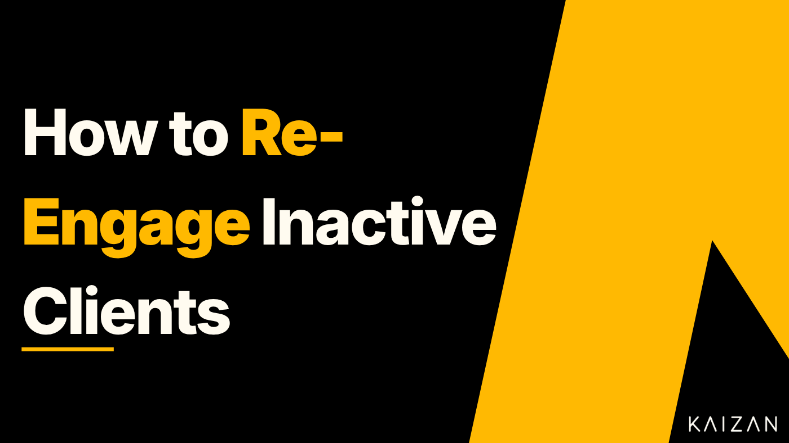

How to Re-Engage Inactive Clients Before They Churn

A client rarely fires you in a single dramatic moment. Far more often they just go quiet. The replies get slower, the meetings get rescheduled, the questions stop coming. By the time a renewal conversation forces the issue, the relationship has already been drifting for months.
That silence is the thing most teams miss. A client going dark is not a neutral state, it is usually the earliest visible sign that you are about to lose them. Which means re-engagement is not a rescue mission you run once an account is already gone. It is a discipline you run continuously, starting the moment a healthy relationship starts to cool.
This guide covers why clients go quiet, how to re-engage an inactive client step by step, the messages that actually restart a conversation, and how to win back clients who have already churned.
What does an inactive client actually look like?
An inactive client is not the same as an unhappy one. Unhappy clients complain. Inactive clients simply disengage. The signals are quieter and easier to rationalise away:
- Replies that used to come in hours now take days, or stop
- Meetings get postponed and not rebooked
- They stop asking questions or raising ideas
- Fewer people from their side show up to calls
- Usage or activity tails off without any complaint
Individually, each of these is easy to explain as a busy quarter. Together, and over time, they are the profile of a client on their way out. The teams that retain best are the ones that treat this pattern as an alarm, not background noise.
Why re-engaging inactive clients matters
The commercial case is simple. Keeping an existing client is far cheaper than winning a new one, and an inactive client is a paying relationship you have already earned and are now at risk of losing for free. Every account that quietly lapses is revenue you had, walking out without a conversation.
There is a compounding effect too. A client who disengages rarely leaves in silence forever. They tend to resurface as a churn number, a lost renewal, or worse, a reference who tells peers the relationship faded. Re-engaging early protects the revenue, the renewal, and the reputation all at once.
And re-engagement is where net revenue retention is quietly won or lost. Expansion gets the attention, but you cannot grow an account you are busy losing. Catching and reversing disengagement is the unglamorous work that keeps the base intact.
How to re-engage an inactive client: a step by step approach
Re-engagement done badly looks like a generic "just checking in" email that everyone ignores. Done well, it gives the client a reason to re-open the relationship.
Work out why they went quiet before you reach out. Silence has causes: a champion left, priorities shifted, a competitor got in, or you simply stopped adding visible value. Reaching out without a hypothesis produces a hollow message. Look back at the last few interactions for the moment the energy dropped.
Lead with value, not with a check-in. A message that asks for the client's time gives them a task. A message that hands them something useful, an insight, a relevant idea, a result, gives them a reason to reply. Make the first move a gift, not a request.
Make it easy to respond. A long email demanding a strategic review is easy to defer. A short, specific message with one clear, low-effort next step is much harder to ignore.
Reach the right person. If your original champion has gone quiet because they have moved on or checked out, no amount of follow-up to them will work. Part of re-engagement is finding whether the relationship needs a new contact entirely.
Escalate the approach, not the frequency. If email is not landing, change the channel or the seniority of who reaches out, rather than sending the same message five more times. A note from your senior lead, or a genuine offer to meet in person, resets a relationship that inbox pings cannot.
Know when to ask the direct question. Sometimes the most respectful and effective move is to name it: are we still the right fit for you? A clear question gives the client permission to be honest, and an honest answer, even a no, is more useful than continued silence.
Re-engagement emails that actually get a reply
People search for this constantly, from "how do i email inactive clients" to "sample letter to inactive customers," and the honest answer is that no template works if it reads like a template. Use these as starting structures, then make them specific to the actual relationship.
The value-first re-open — best when you have something genuinely useful to share.
Subject: Thought of you when I saw this
Hi [name], I came across [specific insight, result, or idea relevant to their world] and immediately thought of [their company]. Based on what you were working on last, this looked directly relevant. Happy to talk it through if useful, no pressure either way.
The client who has gone dark — best after a stretch of no response.
Subject: Still worth a conversation?
Hi [name], I know things have been busy on your side and I do not want to add noise. I would rather ask directly: is this still a priority for you right now? If the timing is off, tell me and I will step back. If it is worth picking up, I have one idea I think is worth ten minutes.
The re-introduction — best when your original contact has moved on and you need a new one.
Subject: Reconnecting on [account]
Hi [name], I worked closely with [previous contact] on [what you did together]. I would love to briefly reintroduce what we have been doing and make sure it is still serving the team well. Would a short call in the next week or two make sense?
The pattern across all three: short, specific, one easy next step, and value before ask.
Winning back churned customers
Re-engaging an inactive client is different from winning back a customer who has already churned. The relationship has ended, and pretending it has not is a mistake. Winning back churned customers works when you treat it as a fresh conversation informed by history, not as a guilt trip.
Three things make win-back work. First, acknowledge honestly why they left, because they remember even if you would rather not raise it. Second, lead with what has changed since, a new capability, a fixed problem, a different approach, so there is a real reason to reconsider. Third, respect the answer. A churned customer who says no but leaves on good terms is a future opportunity. One you pester is gone for good.
Timing matters more here than anywhere. Reaching out the week after they leave feels desperate. Reaching out months later, when a relevant change gives you a legitimate reason, lands as a genuine invitation rather than a retention scramble.
The real fix: catching disengagement before it becomes churn
Every technique above is more effective the earlier you use it. Re-engaging a client who went quiet last week is a conversation. Re-engaging one who went quiet six months ago is a rescue. The difference is entirely about how early you notice.
That is the hard part. Disengagement hides in the pattern across many small interactions: the slowing replies, the cooling tone, the meetings that stop getting booked. Across a full book of clients, no team spots that by memory. It surfaces far too late, usually when a renewal is already in doubt.
This is exactly what a client intelligence platform is built to catch. When the signals from every client conversation, engagement, sentiment, responsiveness, are captured and tracked automatically, a client cooling off shows up as a change in the data weeks before it shows up as a missed renewal. You get to re-engage while it is still a conversation, not a rescue. Kaizan is designed to surface that drift early, so your team can act on the quiet client before quiet becomes gone.
Getting started
If you want a fast win, pull your list of clients who have gone quiet in the last quarter, pick the ones you can least afford to lose, and send each a genuinely value-first message this week. Not a check-in. Something useful.
Then fix the system behind it. The teams that rarely lose clients to silence are not better at writing re-engagement emails. They are better at noticing the silence early enough that the email still works.